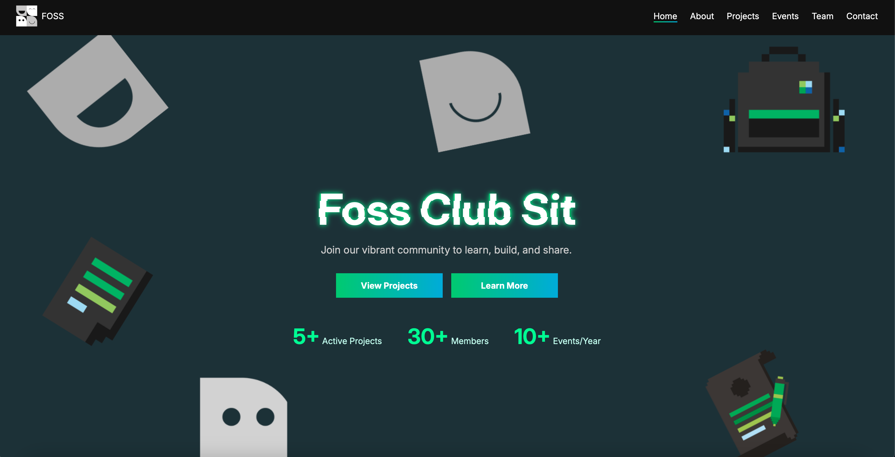
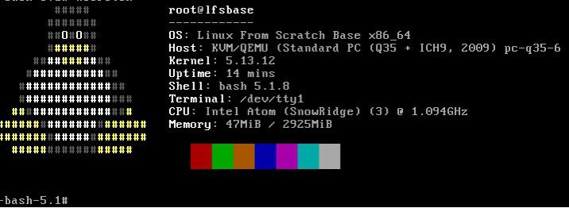
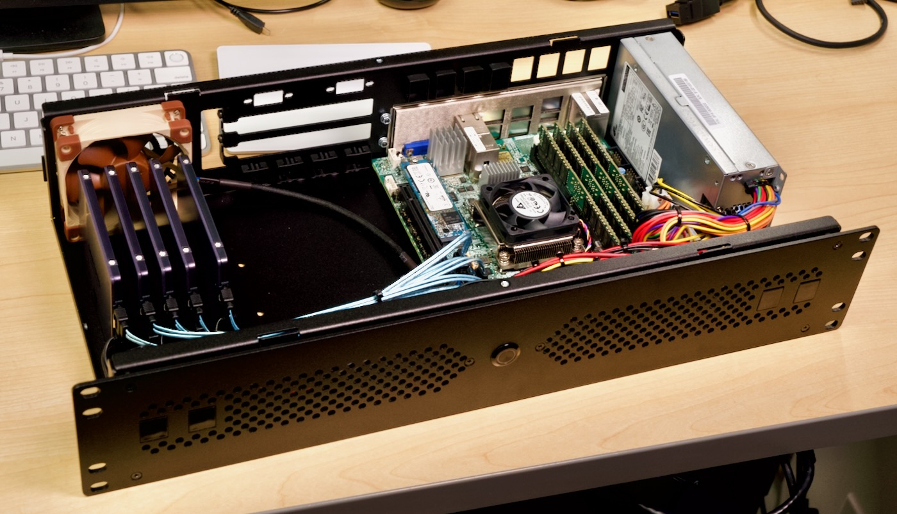

Featured

FOSS Website
Website designed to increase the clubs Transparency to 3rd person POV (yes this one)
html, css, javascript



RL powered snake game
classic version of snake game powered by reinforcement learning
Python
RL Libraries
Tensorflow